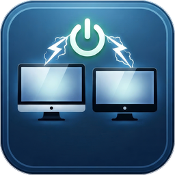

For Windows PCs with several screens
Your screens, on only when you use them.
Shelly PC Screens cuts and restores the power of each monitor by usage profile: all of them for work, one for a long render, the main one for a game. It works through Shelly smart power strips, from an icon next to the clock.

One desk, three ways to use it
A profile says which screens are on. Switch with one keystroke; the others go really dark — not on standby, off.
Sound familiar?
Four screens for one computer
A long job runs overnight and needs one window. The other three screens stay lit, or sit in standby, for hours.
Screens that never really sleep
Portable and USB-C monitors, docks, speakers and hubs keep drawing power while the PC sleeps, or keep waking it.
Reaching behind the desk
Turning a monitor off by hand, one button at a time, then finding its windows stranded on a screen that is gone.
Smart plugs that know nothing
A smart plug switches a socket. It does not know which screen is on it, that the PC is booting, or that the keyboard must stay on for the BIOS.
What changes
Pick a profile anywhere
Ctrl+Win+Alt+P opens the profile picker with a live map of your desk. Arrow, Enter, done.
Everything off when it sleeps
A script on the power strip watches the PC's own power draw: screens go off when it sleeps or shuts down, and come back at boot, even with the app closed.
Each outlet knows its screen
An assistant matches every outlet to the monitor it powers. The map shows your screens where Windows places them, at their real size.
Nothing left on a dark screen
After a profile change, windows stranded on a screen that went off are brought back to the nearest one that is on.
Never cuts what must stay on
The PC's own outlet is protected six times over; the keyboard's hub stays on for the BIOS; no command can leave you with every screen off.
Measure what you save
Power history outlet by outlet, day and night, with the energy used over any period and CSV export.
How it fits together
No cloud and no account: the app talks to the power strips over your local network.
See it

screenshots/profile-picker.png
screenshots/profiles-tab.pngWhat you need
- A Windows PC (64-bit, tested on Windows 11) with two screens or more.
- One or more Shelly Power Strip 4 Gen4 (the device the app is validated on), on your 2.4 GHz Wi-Fi.
- Screens powered from the mains (their own power cord), so an outlet can cut them.
- Fifteen minutes for the setup guide.
Download for Windows All the features
Free and open source, under the MIT license. Not affiliated with Shelly.